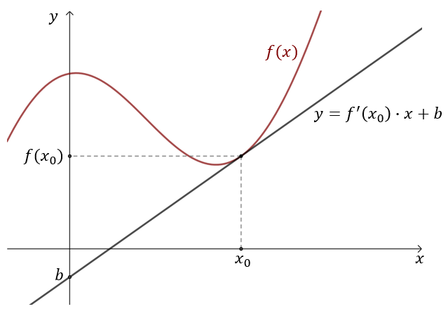

Prosta styczna do wykresu funkcji \(f(x)\) w punkcie
\((x_0, f(x_0))\) wyraża się wzorem: \[y=f'(x_0)(x-x_0)+f(x_0)\] Współczynnik kierunkowy prostej
stycznej, to \(f'(x_0)\).
Równanie prostej stycznej zapisane w postaci kierunkowej,
to: \[y=f'(x_0)\cdot x+b\] gdzie \(b=f(x_0)-f'(x_0)\cdot x_0\).

Wskazówka
Przy wyznaczaniu równania prostej stycznej kluczowe jest obliczenie \(f'(x_0)\).
Wzoru na \(b\) nie ma sensu zapamiętywać, ponieważ \(b\) wyliczamy podstawiając współrzędne punktu
\((x_0,f(x_0))\) do równania \(y=f'(x_0)\cdot x+b\) odpowiednio pod \(x\) oraz \(y\). W ten sposób
można też wyprowadzić wzór na \(b=f(x_0)-f'(x_0)\cdot x_0\).
Wyznacz równanie stycznej do wykresu funkcji \(f(x)=x^2-2x+1\) w punkcie
\(x_0=3\).
Liczymy pochodną funkcji: \[f'(x)=2x-2\] Zatem: \[f'(x_0)=f'(3)=2\cdot
3-2=4\] Wyznaczamy równanie prostej stycznej: \[\begin{split} y&=f'(x_0)\cdot x+b\\[6pt] y&=4x+b
\end{split}\] Żeby obliczyć współczynnik \(b\) podstawimy do równania prostej stycznej
współrzędne punktu \((x_0,f(x_0))\), który należy do tej prostej.
Obliczamy:
\[f(x_0)=f(3)=3^2-2\cdot 3+1=4\] Czyli punkt \((x_0,f(x_0)) = (3,4)\). Zatem podstawiamy:
\[\begin{split} y&=4x+b\\[6pt] 4&=4\cdot 3+b\\[6pt] b&=-8 \end{split}\] Zatem równanie prostej
stycznej do funkcji \(f(x)=x^2-2x+1\) w punkcie \(x_0=3\) jest postaci: \[y=4x-8\]
Funkcja \(f\) określona jest wzorem \(f(x)=x^3-2x^2+1\) dla każdej liczby
rzeczywistej \(x\). Wyznacz równania tych stycznych do wykresu funkcji \(f\), które są równoległe do
prostej o równaniu \(y=4x\).
\(y=4x-7\) oraz \(y=4x+\frac{67}{27}\)